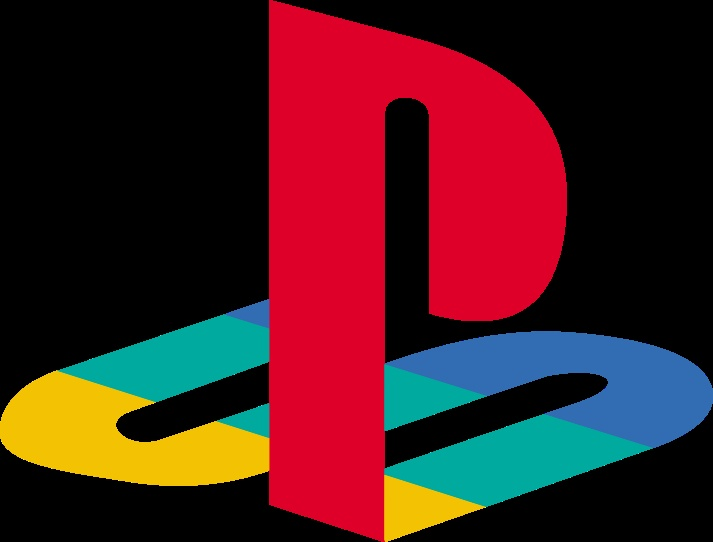
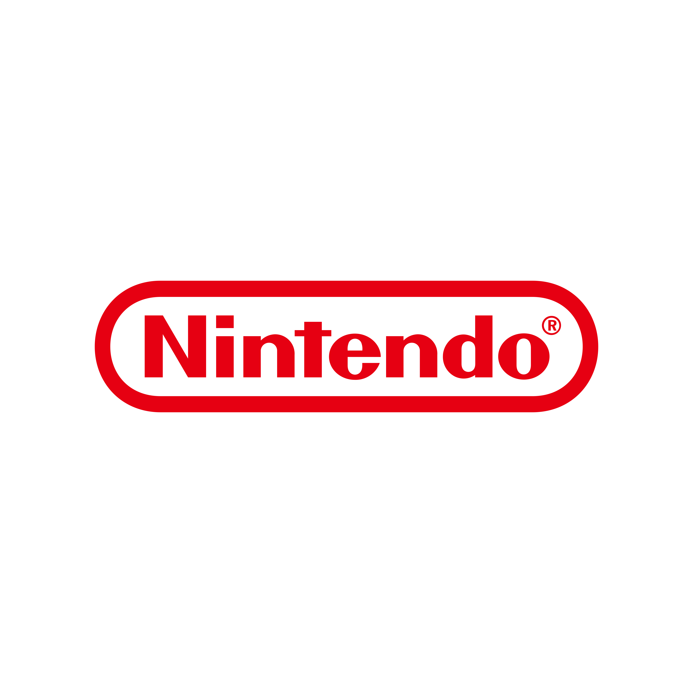
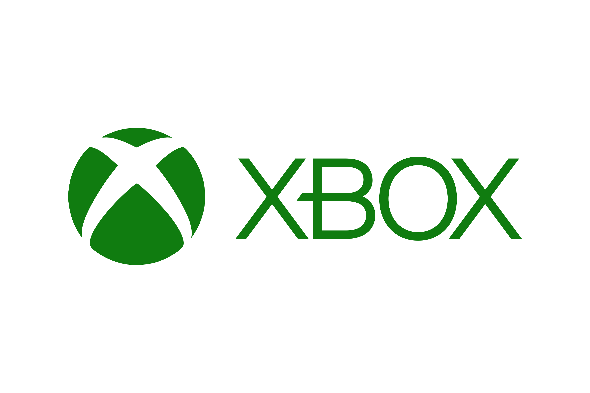
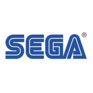
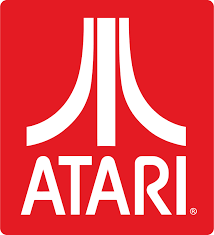

PRINCIPAIS MARCAS DA HISTÓRIA
GIGANTES DA ATUALIDADE

PlayStation
🎮 História da Marca PlayStation A PlayStation é uma marca de consoles de videogame criada pela Sony Interactive Entertainment, divisão da empresa japonesa Sony. A história começou no início dos anos 1990, quando a Sony tentou fazer uma parceria com a Nintendo para criar um console que usasse CDs. O projeto, chamado "Nintendo Play Station", foi cancelado pela Nintendo e isso motivou a Sony a seguir sozinha no mercado de jogos.

Nintendo
🟥 História da Nintendo. A Nintendo é uma das empresas mais antigas e importantes da história dos videogames. Ela foi fundada em 1889, no Japão, por Fusajiro Yamauchi, originalmente como uma fabricante de cartas de baralho tradicionais japonesas chamadas Hanafuda.

Xbox
💚 História do Xbox O Xbox é a marca de consoles criada pela Microsoft, uma das maiores empresas de tecnologia do mundo. Ela entrou no mercado dos videogames no início dos anos 2000, quando o PlayStation 2 dominava as vendas. A ideia era criar um console poderoso, capaz de unir jogos e tecnologia de computador.
GIGANTES DO PASSADO

Sega
SEGA começou nos anos 1940, no Japão, fazendo máquinas de diversão (fliperamas). Nos anos 80, virou famosa com seus jogos de arcade e com o console Master System. O auge veio com o Mega Drive (Genesis) e o mascote Sonic, rival de Mario. Depois, tentou novos consoles como Saturn e Dreamcast, mas fracassou nas vendas. Em 2001, saiu do mercado de consoles e passou a focar em criar jogos para outras plataformas. Hoje, a SEGA é uma grande produtora de jogos e continua com séries famosas como Sonic, Yakuza, Persona e Total War

Atari
tari foi fundada em 1972, nos EUA, por Nolan Bushnell e Ted Dabney. Ela revolucionou os videogames com o Pong, um dos primeiros jogos eletrônicos de sucesso. Nos anos 1970 e 80, lançou o Atari 2600, um dos consoles mais populares da época e símbolo da era de ouro dos videogames. Mas em 1983, a empresa enfrentou o “crash dos videogames”, causado pelo excesso de jogos ruins e perda de público. Depois disso, a Atari perdeu força, foi vendida várias vezes e nunca recuperou seu antigo sucesso.